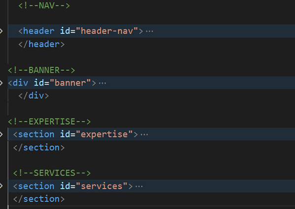

Created: 10/06/2020
By: Surreel Feel
Email: monicalauraburns@yahoo.com
Thank you for purchasing my theme. If you have any questions that are beyond the scope of this help file, please feel free to email via my user page contact form here. Thanks so much!
This theme uses css flexbox and grid. The information within the main content area is grouped in different sections, having semantic class names. Here is the general structure.
If you want to edit the color, font, or style of any elements in one of these columns, you would do the following:
#services h1 {
color: #someColor;
}
If you find that your new style is not overriding, it is most likely because of a specificity problem. Scroll down in your CSS file and make sure that there isn't a similar style that has more weight.
I.E.
#services .title .title-txt h1 {
color: #someColor;
}
So, to ensure that your new styles are applied, make sure that they carry enough "weight" and that there isn't a style lower in the CSS file that is being applied after yours.
I'm using two CSS files in this theme. The first one is the normalize.css reset file. Many browser interpret the default behavior of html elements differently. By using a general reset CSS file, we can work round this. This file also contains some general styling, such as anchor tag colors, image border, input fonts etc. Keep in mind, that these values might be overridden somewhere else in the file.
The second file contains all of the specific stylings for the page. The file is separated into sections using:
/* === HEADER === */
/* === Navigation === */
some code
/* === Banner === */
some code
/* === MAIN CONTENT === */
/* === Expertise === */
some code
/* === Services === */
some code
/* === FOOTER === */
some code
If you want to edit a specific section of the site, simply find the appropriate label in the CSS file, and then scroll down until you find the appropriate style that needs to be edited.
This theme imports 3 javascript packages via CDN and uses one local custom script.
[ The following jquery function adds the class 'change' to the toggle menu icon which results into the sharp angle shape of the menu in the open state.
See CSS -lines 336-346
$('.toggler-btn').click(function() {
$('.toggler-btn').toggleClass('change');
}); ]
[ For the main homepage slider, you can change the sliding interval from 3000 (3 seconds) to your desired one
$(function(){
$('.carousel').carousel({ interval: 3000 });
});]
For the Slick slider customization, please check the documentation at: Slick Slider
I've used images, icons and fonts from the following sources:
Once again, thank you so much for purchasing this theme. As I said at the beginning, I'd be glad to help you if you have any questions relating to this theme. No guarantees, but I'll do my best to assist. If you have a more general question relating to the themes on ThemeForest, you might consider visiting the forums and asking your question in the "Item Discussion" section.
Surreel Feel